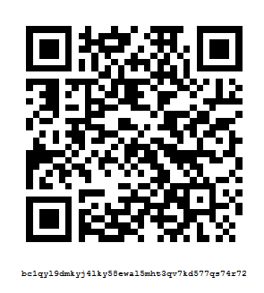

We're two guys that love Bitcoin and want to see it grow, so we're building a mobile Lightning Wallet. The vision for this wallet is to serve also as an identity and social platform, complete with a marketplace, making Bitcoin intuitive by resembling the apps people already use. We've hired an excellent UX/UI designer to help us achieve this goal. Other features of Shock include encrypted messaging/ecommerce, an opt-in public directory, trust system, and more.
While working toward the first commit, we will begin to create a community presence from which to draw support for further development. Capitalist_Dog is the acting community manager, and can be emailed at Capitalist_Dog@tuta.io, or messaged via Twitter. You may also find us on Keybase in shocknet.public.
A prototype commit is expected by the end of May 2018.
All donations will be applied toward development and community building. There will be no token sale, utility or otherwise.

bc1qyl9dmkyj4lky58ewal5mht3qv7kd577qs74r72